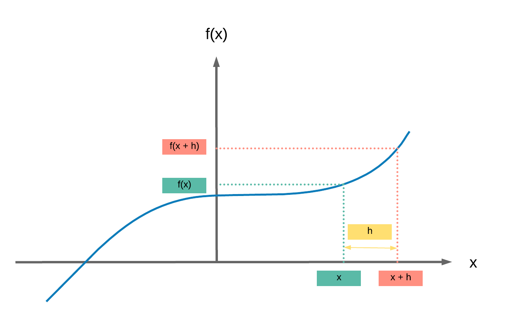

Derivative, Gradient and Jacobian¶
Run Jupyter Notebook
You can run the code for this section in this jupyter notebook link.
Simplified Equation¶
- This is the simplified equation we have been using on how we update our parameters to reach good values (good local or global minima)
- \theta = \theta - \eta \cdot \nabla_\theta
- \theta: parameters (our tensors with gradient accumulation abilities)
- \eta: learning rate (how fast we want to learn)
- \nabla_\theta: gradients of loss with respect to the model's parameters
- Even simplier equation in English:
parameters = parameters - learning_rate * parameters_gradients - This process can be broken down into 2 sequential parts
- Backpropagation
- Gradient descent
Simplified Equation Breakdown¶
- Our simplified equation can be broken down into 2 parts
- Backpropagation: getting our gradients
- Our partial derivatives of loss (scalar number) with respect to (w.r.t.) our model's parameters and w.r.t. our input
- Backpropagation gets us \nabla_\theta which is our gradient
- Gradient descent: using our gradients to update our parameters
- Somehow, the terms backpropagation and gradient descent are often mixed together. But they're totally different.
- Gradient descent relates to using our gradients obtained from backpropagation to update our weights.
- Gradient descent: \theta = \theta - \eta \cdot \nabla_\theta
- Backpropagation: getting our gradients
Steps¶
- Derivatives
- Partial Derivatives
- Gradients
- Gradient, Jacobian and Generalized Jacobian Differences
- Backpropagation: computing gradients
- Gradient descent: using gradients to update parameters
Derivative¶
- Given a simple cubic equation: f(x) = 2x^3 + 5
- Calculating the derivative \frac{df(x)}{dx} is simply calculating the difference in values of y for an extremely small (infinitesimally) change in value of x which is frequently labelled as h
- \frac{df(x)}{dx} = \displaystyle{\lim_{h \to 0}} \frac{f(x + h) - f(x)}{h}
- \frac{f(x + h) - f(x)}{h} is the slope formula similar to what you may be familiar with:
- Change in y over change in x: \frac{\Delta y}{\Delta x}
- And the derivative is the slope when h \rightarrow 0, in essence a super teeny small h
- 
- \frac{f(x + h) - f(x)}{h} is the slope formula similar to what you may be familiar with:
- \frac{df(x)}{dx} = \displaystyle{\lim_{h \to 0}} \frac{f(x + h) - f(x)}{h}
- Let's break down \frac{df}{dx} = \displaystyle{\lim_{h \to 0}} \frac{f(x + h) - f(x)}{h}
- \displaystyle{\lim_{h \to 0} \frac{f(x + h) - f(x)}{h}}
- \displaystyle{\lim_{h \to 0} \frac{(2(x+h)^3 + 5) - 2x^3 + 5}{h}}
- \displaystyle{\lim_{h \to 0} \frac{2(x^2 + 2xh + h^2)(x+h) - 2x^3}{h}}
- \displaystyle{\lim_{h \to 0} \frac{2(x^3 + 2x^2h + h^3 + x^2h + 2xh^2 + h^3) - 2x^3}{h}}
- \displaystyle{\lim_{h \to 0}\frac{2(x^3 + 3x^2h + h^3 + 2xh^2) - 2x^3}{h}}
- \displaystyle{\lim_{h \to 0} \frac{6x^2h + h^3 + 2xh^2}{h}}
- \displaystyle{\lim_{h \to 0} 6x^2 + h^2 + 2xh} = 6x^2
Partial Derivative¶
- Ok, it's simple to calculate our derivative when we've only one variable in our function.
- If we've more than one (as with our parameters in our models), we need to calculate our partial derivatives of our function with respect to our variables
- Given a simple equation f(x, z) = 4x^4z^3, let us get our partial derivatives
- 2 parts: partial derivative of our function w.r.t. x and z
- Partial derivative of our function w.r.t. x: \frac{\delta f(x, z)}{\delta x}
- Let z term be a constant, a
- f(x, z) = 4x^4a
- \frac{\delta f(x, z)}{\delta x} = 16x^3a
- Now we substitute a with our z term, a = z^3
- \frac{\delta f(x, z)}{\delta x} = 16x^3z^3
- Partial derivative of our function w.r.t. z: \frac{\delta f(x, z)}{\delta z}
- Let x term be a constant, a
- f(x, z) = 4az^3
- \frac{\delta f(x, z)}{\delta z} = 12az^2
- Now we substitute a with our x term, a = x^4
- \frac{\delta f(x, z)}{\delta z} = 12x^4z^2
- Partial derivative of our function w.r.t. x: \frac{\delta f(x, z)}{\delta x}
- Ta da! We made it, we calculated our partial derivatives of our function w.r.t. the different variables
Gradient¶
- We can now put all our partial derivatives into a vector of partial derivatives
- Also called "gradient"
- Represented by \nabla_{(x,z)}
- \nabla_{(x,z)} = \begin{bmatrix} \frac{df(x,z)}{dx} \\ \frac{df(x,z)}{dz} \end{bmatrix} = \begin{bmatrix} 16x^3z^3 \\ 12x^4z^2 \end{bmatrix}
- It is critical to note that the term gradient applies for f : \mathbb{R}^N \rightarrow \mathbb{R}
- Where our function maps a vector input to a scalar output: in deep learning, our loss function that produces a scalar loss
Gradient, Jacobian, and Generalized Jacobian¶
In the case where we have non-scalar outputs, these are the right terms of matrices or vectors containing our partial derivatives
- Gradient: vector input to scalar output
- f : \mathbb{R}^N \rightarrow \mathbb{R}
- Jacobian: vector input to vector output
- f : \mathbb{R}^N \rightarrow \mathbb{R}^M
- Generalized Jacobian: tensor input to tensor output
- In this case, a tensor can be any number of dimensions.
Summary¶
We've learnt to...
Success
- Calculate derivatives
- Calculate partial derivatives
- Get gradients
- Differentiate the concepts amongst gradients, Jacobian and Generalized Jacobian
Now it is time to move on to backpropagation and gradient descent for a simple 1 hidden layer FNN with all these concepts in mind.
Citation¶
If you have found these useful in your research, presentations, school work, projects or workshops, feel free to cite using this DOI.